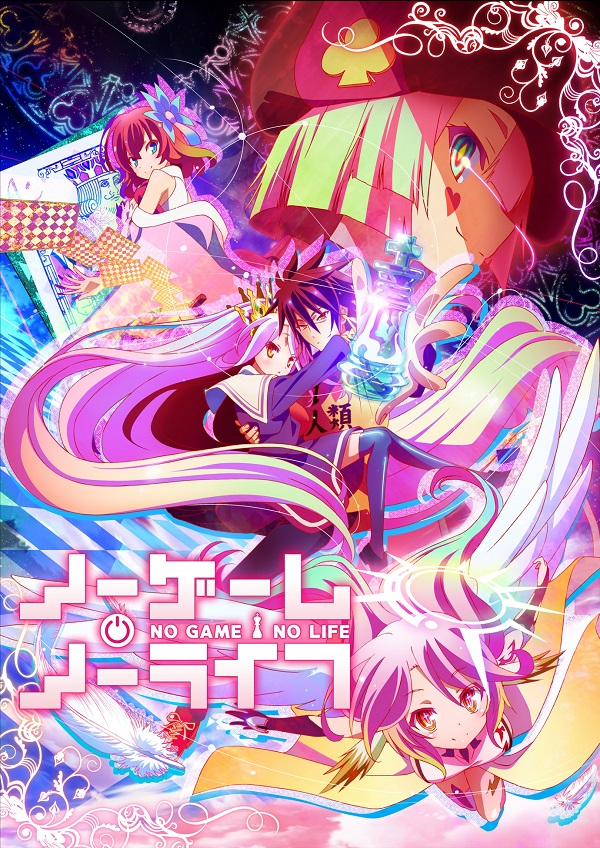

AnimeInterester
NO GAME NO LIFE 遊戲人生

故事簡介
一對在網路上被尊稱為「空白」，甚至被認為是都市傳說的天才遊戲玩家兄妹「空」與「白」。 由於不適應名為「人生」這個現實遊戲，成為家 裡蹲並擁有人群恐懼症的他們，某日收到了來自其他世界，自稱是「神」的少年挑釁並被召喚到異世界。 那是個戰爭和暴力皆被神所禁止，由「遊戲」決定一切的世界。 在這個世界中屢戰屢敗、被剝奪至僅剩最後一片土地的「人類種」，將能夠藉由「空白」之力重返過去的榮耀。
製作人員
原作：榎宮祐
角色原案：榎宮祐
導演：いしづかあつこ
系列構成：花田十輝
角色設計：大舘康二
總作畫監督：大舘康二
美術監督：岩瀬栄治
美術設定：大平司
色彩設計：大野春恵
攝影監督：藤田賢治
3D監督：籔田修平
剪輯：木村佳史子
音響監督：明田川仁
音樂：スーパースィープ
音樂制作：KADOKAWA
製作：ノーゲーム・ノーライフ全権代理委員会
聲優名單
空：松岡禎丞
白：茅野愛衣
史蒂芬妮·多拉：日笠陽子
吉普莉爾：田村由香里
克拉米·傑爾：井口裕香
菲爾·尼爾巴連：能登麻美子
初瀨伊綱：澤城美雪
特圖：釘宮理恵
各集標題
| 話數 | 標題 |
|---|---|
| 1 | 外行人 |
| 2 | 挑戰者 |
| 3 | 熟練者 |
| 4 | 國王 |
| 5 | 布局 |
| 6 | 一步 |
| 7 | 棄子 |
| 8 | 起死回生 |
| 9 | 解離法 |
| 10 | 指向法 |
| 11 | 誘導法 |
| 12 | 收束法 |